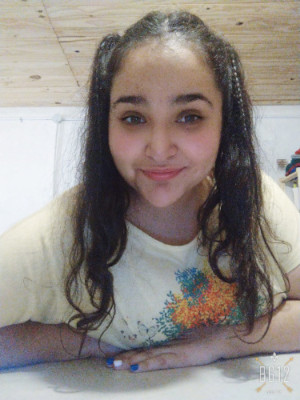

<section id="about" class="about">
    <div class="container">

        <div class="section-title">
            <h2>Resumen</h2>
            <p>Soy Daiana Vanesa Carnevali, estudiante del Profesorado de Educación Física de la Universidad Nacional de
                La Plata y próximamente Full Stack Development Jr gracias a #YoProgramo. Es mi primer acercamiento con
                el
                mundo del desarrollo web, y si bien estoy aprendiendo muchísimo, reconozco que aún me falta aprender
                mucho más.</p>
        </div>

        <div class="row">
            <div class="col-lg-4 text-center" data-aos="fade-right">
                
            </div>
            <div class="col-lg-8 pt-4 pt-lg-0 content" data-aos="fade-left">
                <h3>Full Stack Jr &amp; Game Developer.</h3>
                <p class="fst-italic">
                    Daiana está disponible para proyectos que involucren el desarrollo web y los videojuegos. En ambos
                    campos la experiencia es escasa, pero las ganas de aprender y la curiosidad complementan la
                    inexperiencia.
                </p>
                <div class="row">
                    <div class="col-lg-6">
                        <ul>
                            <li><i class='bx bx-chevron-right'></i> <strong>Teléfono: </strong> <span>+54 (0221) 15 440
                                    0520</span>
                            </li>
                            <li><i class='bx bx-chevron-right'></i> <strong>Ciudad: </strong> <span>La Plata, Buenos
                                    Aires, Argentina</span>
                            </li>
                        </ul>
                    </div>
                    <div class="col-lg-6">
                        <ul>
                            <li><i class='bx bx-chevron-right'></i> <strong>Grado de Estudio: </strong> <span>Superior
                                    Universitario</span></li>
                            <li><i class='bx bx-chevron-right'></i> <strong>Email: </strong>
                                <span>carnevali.daianav@gmail.com</span>
                            </li>
                        </ul>
                    </div>
                </div>
                <p>
                    Daiana comenzó, junto con su hermano, en pleno contexto DISPO-ASPO (durante la pandemia en 2020)
                    el desarrollo, junto a un equipo
                    de desarrolladores web, de un Sistema de Gestión de Alumnos para Institutos de Formación Superior de
                    la
                    Provincia de Buenos Aires. El mismo se planteó desde la óptica que plantea #YoProgramo, es decir
                    consumir una API privada separando el desarrollo del FrontEnd con el BackEnd, pero con diferentes
                    lenguajes y librerías. El FrontEnd se desarrolló con ReactJs (para luego migrar a React Native
                    posibilitando un desarrollo superior) mientras que en el BackEnd se utilizó Django Rest Framework
                    (basado en Python). Actualmente, el proyecto se encuentra discontinuado dada las responsabilidades
                    retomadas de los actores; pero sirvió de inspiración para que Daiana encontrará una ocupación
                    placentera.
                </p>
            </div>
        </div>

    </div>
</section>